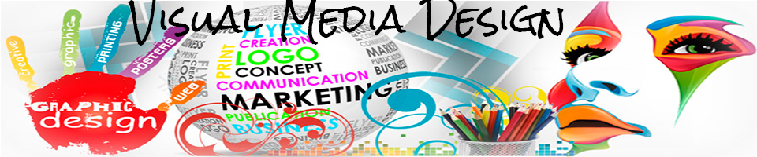

Visual Media Design 105

Visual Design Skills
Communicating with media and beautiful art in today s world often involves be familiar with computer software like Photoshop,Indesign,Illustrator, coding as well as the creative soft skills required of any artist. As a marketing person I found those programs very interesting tools to add to my working experience.
From this class, I learned how formally incorporate creative and function understanding of elements into its own form of communication: space, texture, color, line, size, form, shape and of course how to manipulate pics .

Home |
Raster graphic|
Vector |
Timebase |
PrintLayout|
Contact